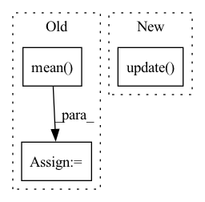

Pattern ID :13693
Before Change
self.scheduler.step()
epoch_loss = np.mean(current_epoch_losses)
epoch_reg = np.mean( current_epoch_reg_losses)
return epoch_loss, epoch_reg, num_batches
def _add_batch_regualarizations(self, loss, reg_lambda_ar):After Change
self.optimizer.step()
for metric in self.metrics:
metric.update(predicted=predicted, target=targets)
self.value_metrics["RegLoss"].update(avg_value=reg_loss, num=targets.shape[0])
self.scheduler.step()
for metric in self.metrics: metric.compute(save=True)In pattern: SUPERPATTERN
Frequency: 4
Non-data size: 3
Instances Fragment ID: 45821675
Project Name: ourownstory/neural_prophet
Commit Name: ea05689f7ccca059223f80c7bd85f8b7943e69d0
Time: 2020-06-16
Author: oskar.triebe@merantix.com
File Name: neuralprophet/neural_prophet.py
M Class Name: NeuralProphet
N Class Name: NeuralProphet
M Method Name: _train_epoch(3)
N Method Name: _train_epoch(3)
M Parent Class:
N Parent Class:
M File Name: neuralprophet/neural_prophet.py
N File Name: neuralprophet/neural_prophet.py
M Start Line: 322
M End Line: 345
N Start Line: 291
N End Line: 319
Before Change
// compute importance weight
// TODO abstract weight into a class
weight = 1. - D(f_s)
weight = weight / weight.mean()
weight = weight.detach()
// domain adversarial loss for D_0
adv_loss_D_0 = domain_adv_D_0(f_s, f_t, w_s=weight)
// entropy loss
y_t = F.softmax(y_t, dim=1)
entropy_loss = entropy(y_t, reduction="mean")
loss = cls_loss + 1.5 * args.trade_off * adv_loss_D + \
args.trade_off * adv_loss_D_0 + args.gamma * entropy_loss
// compute gradient and do SGD step
optimizer.zero_grad()
loss.backward()
optimizer.step()
lr_scheduler.step()
cls_acc = accuracy(y_s, labels_s)[0]
tgt_acc = accuracy(y_t, labels_t)[0]
losses.update(loss.item(), x_s.size(0))
cls_accs.update(cls_acc.item(), x_s.size(0))
tgt_accs.update(tgt_acc.item(), x_s.size(0))
domain_accs_D.update(domain_adv_D.domain_discriminator_accuracy, x_s.size(0))
domain_accs_D_0.update(domain_adv_D_0.domain_discriminator_accuracy, x_s.size(0))
labels_in_target = torch.FloatTensor([c in target_idxes for c in labels_s]).to(device)
labels_in_target_num = labels_in_target.sum()
if labels_in_target_num != 0:
avg_importance = (weight.squeeze() * labels_in_target / labels_in_target_num).sum()
importance_weights.update(avg_importance.item(), int(labels_in_target_num.item()))
batch_time.update(time.time() - end)After Change
// debug: output class weight averaged on the partial classes and non-partial classes respectively
partial_class_weight, non_partial_classes_weight = \
importance_weight_module.get_partial_classes_weight(w_s, labels_s)
partial_classes_weights.update( partial_class_weight.item(), x_s.size(0))
non_partial_classes_weights.update(non_partial_classes_weight.item(), x_s.size(0))
batch_time.update(time.time() - end)
end = time.time() Fragment ID: 45821673
Project Name: thuml/transfer-learning-library
Commit Name: b572f553f392040359d3e98ded8c73f97fd042a0
Time: 2021-02-08
Author: 13126830206@163.com
File Name: examples-da/partial/iwan.py
M Class Name: AnonimousClass
N Class Name: AnonimousClass
M Method Name: train(10)
N Method Name: train(11)
M Parent Class:
N Parent Class:
M File Name: examples-da/partial/iwan.py
N File Name: examples-da/partial/iwan.py
M Start Line: 171
M End Line: 254
N Start Line: 173
N End Line: 251
Before Change
pix_acc = 1.0 * total_correct / (np.spacing(1) + total_label)
IoU = 1.0 * total_inter / (np.spacing(1) + total_union)
mIoU = IoU.mean()
self.running_miou.update(mIoU)
self.running_pixel_acc.update(pix_acc)
After Change
pred = logits.argmax(dim=1) // for computing mIoU, pixel acc.
prob = F.softmax(logits.detach(), dim=1)
self.running_score.update( y.cpu().numpy(), pred.cpu().numpy())
if self.use_pseudo_label and self.nth_query > 0:
dict_losses.update({"ce_pseudo": F.cross_entropy(logits, y_pseudo, ignore_index=self.ignore_index)})
Fragment ID: 45821662
Project Name: noelshin/pixelpick
Commit Name: 135b61b5a20c956ed8bbca2dc1077ab4133404bb
Time: 2021-02-17
Author: gyungin@robots.ox.ac.uk
File Name: segmentation/model.py
M Class Name: Model
N Class Name: Model
M Method Name: _train_epoch(7)
N Method Name: _train_epoch(7)
M Parent Class:
N Parent Class:
M File Name: segmentation/model.py
N File Name: segmentation/model.py
M Start Line: 205
M End Line: 293
N Start Line: 216
N End Line: 277
Before Change
// update server model when client_buffer_cache is full
if self.buffer_cnt == self.client_num_per_round:
self._buffer[:] = torch.mean(
torch.stack(self.client_buffer_cache), dim=0) // FedAvg 这里可抽象为接口给用户
// self.update(self.client_buffer_cache) // TODO: try to override self.update()
After Change
// update server model when client_buffer_cache is full
if self.cache_cnt == self.client_num_per_round:
// TODO: try to override self.update()
self.update( self.client_buffer_cache.values())
else:
raise Exception("Undefined message type!")
Fragment ID: 45821661
Project Name: smilelab-fl/fedlab
Commit Name: 6d8db0033e6ed08ce5727d49f28abaeccadbc5b1
Time: 2021-04-08
Author: 928255708@qq.com
File Name: fedlab_core/server/handler.py
M Class Name: SyncParameterServerHandler
N Class Name: SyncParameterServerHandler
M Method Name: on_receive(4)
N Method Name: on_receive(4)
M Parent Class: ParameterServerHandler
N Parent Class: ParameterServerHandler
M File Name: fedlab_core/server/handler.py
N File Name: fedlab_core/server/handler.py
M Start Line: 122
M End Line: 138
N Start Line: 132
N End Line: 139